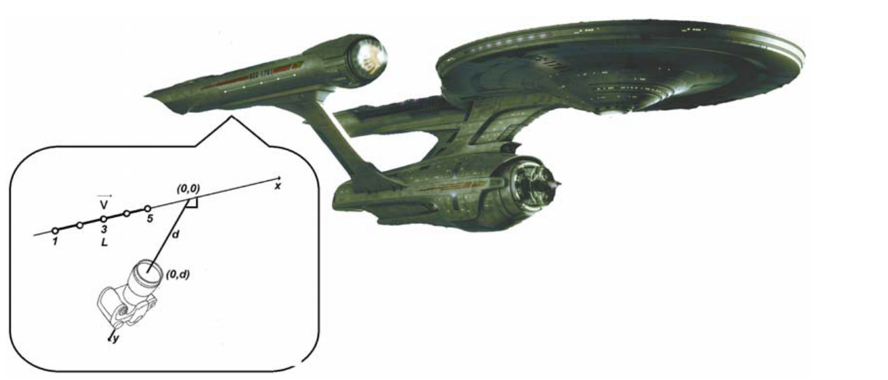
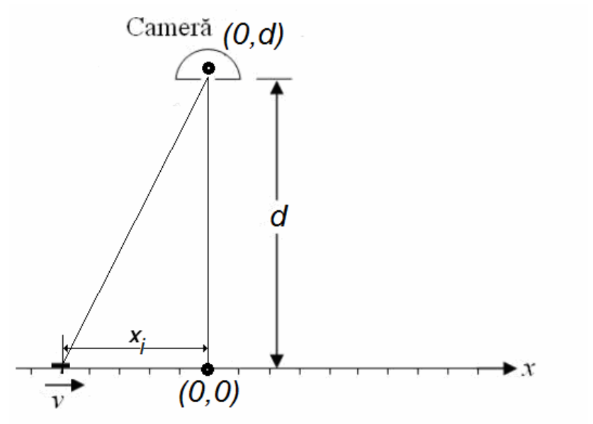
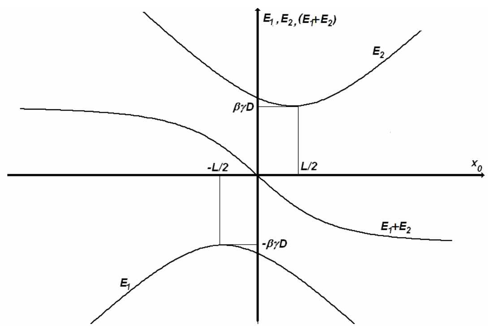

원문: Romanian Master of Physics 2013, Problema teoretică nr. 3 – Soluţie (루마니아어 원문에서 번역). 원문 해설지는 문제 본문을 먼저 싣고 이어서 풀이를 싣는다. 식 번호에 붙은 *는 해당 과제의 답이 되는 식을 표시한다.

우주선 엔터프라이즈(Enterprise)호는 두 워프 추진기 각각을 따라 번호가 매겨지고 한 직선 위에 같은 간격으로 놓인 다섯 개의 표지등(beacon light)이 늘어서 있다. 그림(오른쪽 추진기의 경우)에서 보는 바와 같다.
움직일 때 SS 엔터프라이즈호는 일정한 속도 $\vec v$로 이동하며, 이어지는 질문들에서 한 추진기 위의 표지등들은 항상 좌표축 $Ox$를 따라 놓여 있다.
SS 엔터프라이즈호를 관측하며 정지해 있는 다른 우주선의 관측실에서는 표지등 줄의 영상을 분석한다. 영상은 위 그림의 확대 부분에 나타낸 직교 좌표계에서 좌표 $(0,d)$인 점에 조리개가 있는 카메라로 찍는다. 표지등 줄의 영상은 매우 짧은 시간 동안 열리는 카메라 조리개에 동시에 도달하는 광선들로 만들어진다.
SS 엔터프라이즈호가 정지해 있을 때 찍은 영상에서 표지등 줄의 길이는 $L$이다. 문제의 조건에서 표지등은 점으로 간주할 수 있다.
진공에서의 빛의 속력은 $c = 3{,}00\times10^8\,m\cdot s^{-1}$이다.
다음 과제들의 답을 더 간단한 꼴로 나타내는 데 도움이 된다면 $\beta = v/c$와 $\gamma = 1\big/\sqrt{1-\beta^2}$을 사용하라.
실제 위치란 카메라가 정지해 있는 기준계에서의 위치이다.
이후 카메라는 좌표 $(0,d)$인 점에 고정되어 있고, SS 엔터프라이즈호는 $Ox$ 방향으로 속도 $\vec v$로 움직인다. 위에서 설명한 카메라가 찍은 한 영상에서 표지등 하나가 위치 $x_i$에 있는 것으로 관측된다.
1.a. 그 영상이 카메라에 맺히는 순간 표지등의 위치 $x$에 대한 식을 구하라.
1.b. 역관계를 구하라. 즉 $x_i$를 $x$, $d$, $L$, $v$, $c$의 함수로 나타내라.
카메라는 표지등 줄의 중심이 점 $x_0$에 있는 순간 그 영상을 만든다.
2.a. 이 영상에서 표지등 줄의 겉보기 길이 $L_i$에 대한 식을 구하라.
2.b. SS 엔터프라이즈호가 $Ox$축을 따라 아주 먼 곳에서 다가와 좌표계의 원점을 지난 뒤 멀어져 가는 동안, 표지등 줄의 겉보기 길이가 시간에 따라 어떻게 변하는지 수학적으로 기술하라.
카메라가 찍은 영상 중 하나에서는 양 끝의 표지등이 카메라 조리개로부터 같은 거리에 있다.
3.a. 이 영상에서 표지등 줄의 겉보기 길이 $L_{i,simetric}$에 대한 식을 유도하라.
3.b. 이 영상을 얻은 순간 가운데 표지등의 실제 위치에 대한 식을 구하라.
3.c. 영상에서 가운데 표지등의 위치에 대한 식을 구하라.
카메라는 SS 엔터프라이즈호가 아주 멀리 있으면서 다가올 때 표지등 줄의 영상을 하나 찍고, 우주선(과 표지등 줄)이 아주 멀리 있으면서 카메라로부터 멀어질 때 또 다른 영상을 찍는다. 이 영상들 중 하나에서 표지등 줄의 겉보기 길이는 $200\,m$이고, 다른 하나에서는 $600\,m$이다.
4.a. 다음 진술 중 어느 것이 옳은지 밝혀라. 답의 근거를 제시하라.
i. 겉보기 길이는 “다가오는” 우주선의 영상에서 $200\,m$이고 “멀어지는” 우주선의 영상에서 $600\,m$이다.
ii. 겉보기 길이는 “다가오는” 우주선의 영상에서 $600\,m$이고 “멀어지는” 우주선의 영상에서 $200\,m$이다.
4.b. 우주선의 이동 속력 $v$의 값을 구하라.
4.c. 정지 상태에서의 거리 $L$의 값을 계산하라.
4.d. 과제 3.a에서 언급한 대칭 영상에서 표지등 줄의 겉보기 길이를 계산하라.
1.a. 카메라에 나타나는 영상은 같은 순간에 도착하는 광선들 때문에 생기며, 동시에 출발하는 광선들 때문에 생기는 것이 아니다. 이 때문에 표지등 줄 위의 한 점의 겉보기 영상과, 영상이 만들어지는 순간 그 점의 실제 위치 사이에 차이가 생긴다.
위치 $x_i$로 표시된 표지등이 핀홀 카메라(camera obscura)의 영상에 나타나려면, 그 표지등에서 나온 빛이 영상을 찍는 순간보다 다음과 같은 시간 $T$만큼 먼저 출발했어야 한다.
\[T = \frac{\sqrt{d^2+x_i^2}}{c}\tag{1}\]
빛이 표지등에서 핀홀 카메라까지 가는 데 필요한 시간 동안 표지등은 거리 $v\cdot T$만큼 이동했으므로, 영상을 찍는 순간 표지등의 “실제 위치”는 다음과 같다.
\[x = x_i+v\cdot T = x_i+\frac vc\sqrt{d^2+x_i^2} = x_i+\beta\cdot\sqrt{d^2+x_i^2}\tag*{(2)*}\]위치 $x_i$에 있던 표지등은 위치 $x$에 있을 때 영상에 나타난다.
식 (2)*가 과제 1.a의 답이다.
1.b. 위 관계식을 제곱하면 차례로 다음을 얻는다.
\[\begin{cases}x^2-2x\cdot x_i+x_i^2 = \beta^2\cdot d^2+\beta^2\cdot x_i^2\\ \left(1-\beta^2\right)x_i^2-2x\cdot x_i+\left(x^2-\beta^2\cdot d^2\right) = 0\\ \left(1-\beta^2\right)x_i^2-2x\cdot x_i+\left(x^2-d^2+\left(1-\beta^2\right)\cdot d^2\right) = 0\\ \dfrac{x_i^2}{\gamma^2}-2x\cdot x_i+\left(x^2-d^2+\dfrac{d^2}{\gamma^2}\right) = 0\end{cases}\tag{3}\]이에 대응하여
\[\begin{cases}x_i = \gamma^2\left(x\pm\sqrt{x^2-\dfrac{1}{\gamma^2}\left(x^2-\beta^2\cdot d^2\right)}\right)\\[3mm] x_i = \gamma^2\left(x\pm\dfrac1\gamma\sqrt{\beta^2\cdot d^2-\left(1-\gamma^2\right)\cdot x^2}\right)\end{cases}\tag{4}\]다음이 성립하므로
\[1-\gamma^2 = 1-\frac{1}{1-\beta^2} = \frac{-\beta^2}{1-\beta^2} = -\beta^2\cdot\gamma^2\tag{5}\](5)의 마지막 관계식으로부터 다음을 얻는다.
\[\begin{cases}x_i = \gamma^2\left(x\pm\dfrac\beta\gamma\sqrt{d^2+\gamma^2\cdot x^2}\right)\\[3mm] x_i = \gamma\left(\gamma\cdot x\pm\beta\sqrt{d^2+\gamma^2\cdot x^2}\right)\end{cases}\tag{6}\]표지등은 자신이 움직이는 축 위로 내린 원점의 사영에 다가가고 있으므로, 위 식들에서 부호를 자연스럽게 선택하면 다음과 같다.
\[x_i = \gamma\left(\gamma\cdot x-\beta\cdot\sqrt{d^2+\gamma^2\cdot x^2}\right)\tag*{(7)*}\]영상이 위치 $x_i$에 나타나는 표지등은 영상이 만들어지는 순간 위치 $x$에 있다.
식 (7)*이 과제 1.b의 답이다.
2.a. 표지등들이 속도 $\vec v$로 움직이므로, 로런츠 수축(Lorentz contraction) 때문에 그 길이는 $L/\gamma$이다.
핀홀 카메라가 중심이 점 $x_0$에 있는 표지등 줄의 영상을 만드는 순간, 양 끝 표지등의 위치는 각각
\[x_{\text{față}} = x_+ = x_0+\frac{L}{2\gamma}\tag{8}\]그리고
\[x_{spate} = x_- = x_0-\frac{L}{2\gamma}\tag{9}\](첨자 față: 앞쪽, spate: 뒤쪽)
양 끝의 영상 $x_{i,\pm}$는 핀홀 카메라에 “마치 다음 위치에 있는 것처럼” 맺힌다.
\[x_{i,\pm} = \gamma\left(\gamma\cdot x_0\pm\frac L2\right)-\beta\cdot\gamma\sqrt{d^2+\left(\gamma\cdot x_0\pm\frac L2\right)^2}\tag{10}\]위 관계식에서는 표지등 줄 양 끝의 위치에 대한 식과 관계식 (8)을 고려하였다.
표지등 줄의 겉보기 길이 $L_i$는 양 끝의 겉보기 위치의 차이, 즉
\[L_i\left(x_0\right) = x_{i,+}-x_{i,-}\tag{11}\] \[L_i\left(x_0\right) = \gamma\cdot L-\beta\cdot\gamma\sqrt{d^2+\left(\gamma\cdot x_0+\frac L2\right)^2}+\beta\cdot\gamma\sqrt{d^2+\left(\gamma\cdot x_0-\frac L2\right)^2}\tag*{(12)*}\]식 (12)*가 과제 2.a의 답이다.
2.b. $x_0$의 함수로 본 2차 다항식
\[F_1 = \left(\gamma\cdot x_0+\frac L2\right)^2+d^2\tag{13}\]은 다음에서 최솟값 $d^2$을 갖는다.
\[x_0 = -\frac{L}{2\gamma}\tag{14}\]변수 $x_0$의 값이 $x_0 \ge -\dfrac{L}{2\gamma}$일 때 함수 $F_1$은 단조 증가한다.
이에 대응하여, 식
\[E_1 = -\beta\cdot\gamma\sqrt{F_1}\tag{15}\]은 $x_0 = -\dfrac{L}{2\gamma}$까지 단조 증가하고 그 뒤로 단조 감소하며, 다음 값의 최댓값을 갖는다.
\[E_{1,max} = E_1\left(x_0 = -\frac{L}{2\gamma}\right) = -\beta\gamma d\tag{16}\]다음일 때
\[x_0 = \frac{L}{2\gamma}\tag{17}\] \[E_1\left(x_0 = \frac{L}{2\gamma}\right) = -\beta\cdot\gamma\sqrt{d^2+L^2}\tag{18}\]그래프로 보면 $E_1(x_0)$의 의존성은 그림 2와 같은 모양이다.

마찬가지로, $x_0$의 함수로 본 2차 다항식
\[F_2 = \left(\gamma\cdot x_0-\frac L2\right)^2+d^2\tag{19}\]은 다음에서 최솟값 $d^2$을 갖는다.
\[x_0 = \frac{L}{2\gamma}\tag{20}\]변수 $x_0$의 값이 $x_0 \ge \dfrac{L}{2\gamma}$일 때 함수 $F_2$는 단조 증가한다.
이에 대응하여, 식
\[E_2 = \beta\cdot\gamma\sqrt{F_2}\tag{21}\]는 $x_0 = \dfrac{L}{2\gamma}$까지 단조 감소하고 그 뒤로 단조 증가하며, 다음 값의 최솟값을 갖는다.
\[E_{2,minim} = E_2\left(x_0 = \frac{L}{2\gamma}\right) = \beta\gamma d\tag{22}\]다음일 때
\[x_0 = -\frac{L}{2\gamma}\tag{23}\] \[E_2\left(x_0 = -\frac{L}{2\gamma}\right) = \beta\cdot\gamma\sqrt{d^2+L^2}\tag{24}\]그래프로 보면 $E_2(x_0)$의 의존성은 그림 2와 같은 모양이다.
식
\[\begin{cases}E = E_1+E_2 = \gamma\beta\left(\sqrt{F_2}-\sqrt{F_1}\right)\\[2mm] E = \gamma\beta\dfrac{F_2-F_1}{\left(\sqrt{F_2}+\sqrt{F_1}\right)} = \dfrac{\left(\gamma\cdot x_0-\dfrac L2\right)^2+d^2-\left(\left(\gamma\cdot x_0+\dfrac L2\right)^2+d^2\right)}{\sqrt{\left(\gamma\cdot x_0-\dfrac L2\right)^2+d^2}+\sqrt{\left(\gamma\cdot x_0+\dfrac L2\right)^2+d^2}}\\[8mm] E = \gamma\beta\dfrac{-2}{\sqrt{\left(\gamma\cdot x_0-\dfrac L2\right)^2+d^2}+\sqrt{\left(\gamma\cdot x_0+\dfrac L2\right)^2+d^2}}\,\gamma\cdot x_0L\end{cases}\tag{25}\]은 그림 2의 그래프에서 보듯이 단조 감소한다.
위 식들 중 마지막 관계식은 다음 꼴로도 쓸 수 있다.
\[E = \frac{-2\gamma^2\cdot\beta\cdot L}{\sqrt{\left(\gamma-\dfrac{L}{2x_0}\right)^2+\left(\dfrac{d}{x_0}\right)^2}+\sqrt{\left(\gamma+\dfrac{L}{2x_0}\right)^2+\left(\dfrac{d}{x_0}\right)^2}}\cdot\frac{x_0}{\left|x_0\right|}\tag{26}\]변수 $x_0$이 음수일 때 위 식은 다음과 같이 쓰인다.
\[E_- = \frac{2\gamma^2\cdot\beta\cdot L}{\sqrt{\left(\gamma-\dfrac{L}{2x_0}\right)^2+\left(\dfrac{d}{x_0}\right)^2}+\sqrt{\left(\gamma+\dfrac{L}{2x_0}\right)^2+\left(\dfrac{d}{x_0}\right)^2}}\tag{27}\]분명히, $x_0$이 $-\infty$에서 0까지 단조 증가할 때, 즉 $-\infty < x_0 < 0$일 때, 식 (27)도 다음 값들 사이에서 단조롭게, 그러나 감소하며 변한다.
\[E_-(-\infty) = \frac{\gamma^2\cdot\beta\cdot L}{\sqrt{\gamma^2}} = \gamma\cdot\beta\cdot L\tag{28}\]그리고
\[E_-(0) = 0\tag{29}\]변수 $x_0$이 양수일 때 식 (26)은 다음과 같이 쓰인다.
\[E_+ = \frac{-2\gamma^2\cdot\beta\cdot L}{\sqrt{\left(\gamma-\dfrac{L}{2x_0}\right)^2+\left(\dfrac{d}{x_0}\right)^2}+\sqrt{\left(\gamma+\dfrac{L}{2x_0}\right)^2+\left(\dfrac{d}{x_0}\right)^2}}\tag{30}\]$x_0$이 0에서 $\infty$까지 단조 증가하면, 즉 $0 < x_0 < \infty$이면, 식 (30)도 다음 값들 사이에서 단조롭게, 그러나 감소하며 변한다.
\[E_+(0) = 0\tag{31}\]그리고
\[E_+(\infty) = -\gamma\cdot\beta\cdot L\tag{32}\]겉보기 길이에 대한 해석적 고찰
\[L_i\left(x_0\right) = \gamma\cdot L+E\tag{33}\]은 겉보기 길이 역시 $x_0$이 증가할 때 단조 감소함을 보여 준다.
따라서 표지등 줄의 겉보기 길이는 항상 감소한다.
위의 설명이 과제 2.b의 답이다.
3.a. 핀홀 카메라가 찍은 영상에서 표지등 줄의 양 끝이 핀홀 카메라의 조리개로부터 같은 거리에 있다면, 표지등 줄의 양 끝에서 나온 빛이 같은 거리를 지나 같은 시간 간격 동안 카메라 조리개에 도달한다는 뜻이다. 영상을 만드는 빛은 표지등 줄의 양 끝에서 동시에 출발하였다. 이 조건에서 표지등 줄의 겉보기 길이는 움직이는 표지등 줄의 길이, 즉 $\dfrac L\gamma$이다.
따라서 대칭 영상에 나타나는 표지등 줄의 겉보기 길이에 관한 질문 3.a.의 답은 다음과 같다.
\[L_{i,simetric} = \frac L\gamma\tag*{(34)*}\]식 (34)*가 과제 3.a의 답이다.
3.b. 문제의 조건에 따라 양 끝의 영상은 대칭이다. 이는 다음과 같다.
\[x_{i,+} = -x_{i,-}\tag{35}\]즉
\[x_{i,+}+x_{i,-} = 0\](10)을 고려하면 위 관계식은 다음과 같이 된다.
\[\begin{aligned}0 = x_{i,+}+x_{i,-} &= 2\gamma^2\cdot x_0-\beta\cdot\gamma\sqrt{d^2+\left(\gamma\cdot x_0+\frac L2\right)^2}\\ &\quad-\beta\cdot\gamma\sqrt{d^2+\left(\gamma\cdot x_0-\frac L2\right)^2}\end{aligned}\tag{36}\]분석하는 상황에 대해 표지등 줄의 겉보기 길이도 쓰면
\[\begin{cases}\dfrac L\gamma = x_{i,+}-x_{i,-} = L_i\left(x_0\right)\\[3mm] \dfrac L\gamma = \gamma\cdot L-\beta\cdot\gamma\sqrt{d^2+\left(\gamma\cdot x_0+\dfrac L2\right)^2}+\beta\cdot\gamma\sqrt{d^2+\left(\gamma\cdot x_0-\dfrac L2\right)^2}\end{cases}\tag{37}\]이고, 위 관계식들을 더하면 다음을 얻는다.
\[\begin{cases}\dfrac L\gamma = 2\gamma^2\cdot x_0+\gamma\cdot L-2\beta\cdot\gamma\sqrt{d^2+\left(\gamma\cdot x_0+\dfrac L2\right)^2}\\[3mm] \dfrac{2\gamma^2\cdot x_0+\gamma\cdot L-\dfrac L\gamma}{2\beta\cdot\gamma} = \sqrt{d^2+\left(\gamma\cdot x_0+\dfrac L2\right)^2}\\[5mm] \sqrt{d^2+\left(\gamma\cdot x_0+\dfrac L2\right)^2} = \dfrac{x_0\cdot\gamma}{\beta}+\dfrac{L\left(\gamma^2-1\right)}{2\beta\cdot\gamma^2} = \dfrac{x_0\cdot\gamma}{\beta}+\dfrac{L\cdot\beta}{2}\end{cases}\tag{38}\]따라서
\[\sqrt{d^2+\left(\gamma\cdot x_0+\frac L2\right)^2} = \frac{x_0\cdot\gamma}{\beta}+\frac{L\cdot\beta}{2}\tag{39}\](37)에서 (36)을 빼면 다음을 얻는다.
\[\sqrt{d^2+\left(\gamma\cdot x_0-\frac L2\right)^2} = \frac{x_0\cdot\gamma}{\beta}-\frac{L\cdot\beta}{2}\tag{40}\]마지막 두 관계식 중 어느 것으로부터도 표지등 줄의 중간 위치의 값을 얻을 수 있다.
(40)으로부터 차례로 다음을 얻는다.
\[\begin{cases}d^2+\left(\gamma\cdot x_0+\dfrac L2\right)^2 = \left(\dfrac{x_0\cdot\gamma}{\beta}+\dfrac{L\cdot\beta}{2}\right)^2\\[3mm] d^2+\gamma^2\cdot x_0^2+\dfrac{L^2}{4}+\gamma\cdot x_0\cdot L = \dfrac{x_o^2\cdot\gamma^2}{\beta^2}+\dfrac{L^2\cdot\beta^2}{4}+\gamma\cdot x_0\cdot L\\[3mm] \gamma^2\cdot x_0^2\cdot\left(1-\dfrac{1}{\beta^2}\right) = \dfrac{L^2}{4}\left(\beta^2-1\right)-d^2\\[3mm] \dfrac{1}{1-\beta^2}\cdot x_0^2\cdot\left(1-\dfrac{1}{\beta^2}\right) = \dfrac{L^2}{4}\left(\beta^2-1\right)-d^2\end{cases}\tag{41}\]그러므로
\[x_0 = \beta\sqrt{\frac{L^2}{4\gamma^2}+d^2}\tag*{(42)*}\]식 (43)*이 과제 3.b의 답이다. (원문 표기 그대로이며, 문맥상 식 (42)*를 가리킨다.)
표지등 줄 중심의 위치를 구하는 다른 방법은 “양 끝이 대칭으로 놓였다”는 가정에서 출발하여, 관계식 (36)을 다음 꼴로 쓰는 것이다.
\[2\gamma^2\cdot x_0-\beta\cdot\gamma\sqrt{d^2+\left(\gamma\cdot x_0+\frac L2\right)^2} = \beta\cdot\gamma\sqrt{d^2+\left(\gamma\cdot x_0-\frac L2\right)^2}\tag{43}\]이로부터 두 번 제곱하고 다른 대수적 처리를 거쳐 차례로 다음을 얻는다.
\[\begin{cases}4\gamma^4\cdot x_0^2+2\beta^2\cdot\gamma^3\cdot x_0\cdot L = 4\beta\cdot\gamma^3\cdot x_0\cdot\sqrt{d^2+\left(\gamma\cdot x_0+\dfrac L2\right)^2}\\[3mm] 4\gamma^2\cdot x_0^4\left(1-\beta^2\right)+\beta^2\cdot x_0^2\cdot L^2\left(\beta^2-1\right)-4\beta^2\cdot x_0^2\cdot d^2 = 0\\[3mm] 4\cdot x_0^4-\dfrac{\beta^2\cdot x_0^2\cdot L^2}{\gamma^2}-4\beta^2\cdot x_0^2\cdot d^2 = 0\end{cases}\tag{44}\]마지막 관계식으로부터 관계식 (42)를 다시 얻을 수 있다.
3.c. 영상에서 표지등 줄의 중간 위치는 겉보기 위치와 실제 위치 사이의 관계식 (7)을 이용하여 구할 수 있다.
\[\begin{cases}x_{i,0} = \gamma\left(\gamma\cdot x_0-\beta\cdot\sqrt{d^2+\gamma^2\cdot x_0^2}\right)\\[3mm] x_{i,0} = \gamma\left(\gamma\cdot\beta\sqrt{d^2+\left(\dfrac{L}{2\gamma}\right)^2}-\beta\cdot\sqrt{d^2+\gamma^2\cdot\beta^2\left(d^2+\left(\dfrac{L}{2\gamma}\right)^2\right)}\right)\end{cases}\tag{45}\]영상에서 표지등 줄의 중간 위치에 대한 식은 다음과 같다.
\[x_{i,0} = \gamma\cdot\beta\left(\sqrt{\left(\gamma\cdot d\right)^2+\left(\frac L2\right)^2}-\sqrt{\left(d\cdot\gamma\right)^2+\left(\frac{L\cdot\beta}{2}\right)^2}\right)\tag{46}\]표지등 줄의 앞쪽 끝의 영상은 $x_{i,+}$에 있다. 앞쪽 끝의 영상과 중심의 영상 사이의 거리는 다음과 같다.
\[\begin{aligned}\ell &= x_{i,+}-x_{i,0} = \frac{L}{2\gamma}-x_{i,0}\\ &= \frac{L}{2\gamma}-\gamma\cdot\beta\left(\sqrt{\left(\gamma\cdot d\right)^2+\left(\frac L2\right)^2}-\sqrt{\left(d\cdot\gamma\right)^2+\left(\frac{L\cdot\beta}{2}\right)^2}\right)\end{aligned}\tag*{(47)*}\]식 (47)*이 과제 3.c의 답이다.
4.a. 관계식 (28)과 (33)으로부터, “먼 곳에서 다가오는” 영상에서 표지등 줄의 겉보기 길이를 다음과 같이 쓸 수 있다.
\[\begin{cases}L_{i,apropiere} = L_i\left(x_0\to-\infty\right) = \gamma\cdot L+E_- = \gamma\cdot L+\gamma\cdot\beta\cdot L\\[2mm] L_{i,apropiere} = \gamma\cdot L\cdot\left(1+\beta\right) = L\dfrac{1+\beta}{\sqrt{1-\beta^2}}\\[3mm] L_{i,apropiere} = L\sqrt{\dfrac{1+\beta}{1-\beta}}\end{cases}\tag{48}\]마찬가지로, 관계식 (32)와 (33)으로부터 “멀어지는” 영상에서 표지등 줄의 겉보기 길이를 다음과 같이 쓸 수 있다.
\[\begin{cases}L_{i,indepartare} = L_i\left(x_0\to\infty\right) = \gamma\cdot L+E_+ = \gamma\cdot L-\gamma\cdot\beta\cdot L\\[2mm] L_{i,indepartare} = \gamma\cdot L\cdot\left(1-\beta\right) = L\dfrac{1-\beta}{\sqrt{1-\beta^2}}\\[3mm] L_{i,indepartare} = L\sqrt{\dfrac{1-\beta}{1+\beta}}\end{cases}\tag{49}\](첨자 apropiere: 다가옴, indepartare: 멀어짐)
분명히
\[L_{i,apropiere} = L\sqrt{\frac{1+\beta}{1-\beta}} > L_{i,indepartare} = L\sqrt{\frac{1-\beta}{1+\beta}}\tag*{(50)*}\]이므로, 과제 4.a의 옳은 답은 ii라고 말할 수 있다. 겉보기 길이는 다가오는 우주선의 영상에서 $600\,m$이고 멀어지는 우주선의 영상에서 $200\,m$이다.
식 (50)*과 위의 설명이 과제 4.a의 답이다.
4.b. 이른 영상과 늦은 영상의 길이의 비는 다음과 같다.
\[\frac{L_{i,apropiere}}{L_{i,indepartare}} = \frac{L\sqrt{\dfrac{1+\beta}{1-\beta}}}{L\sqrt{\dfrac{1-\beta}{1+\beta}}} = \frac{1+\beta}{1-\beta} = \frac31\,.\tag{51}\]이 관계식으로부터 다음을 얻는다.
\[\begin{cases}1+\beta = 3-3\beta\\[1mm] \beta = \dfrac12\end{cases}\tag{52}\]그 결과
\[\begin{cases}v = \dfrac c2\\[2mm] v = 1{,}50\cdot10^8\,m\cdot s^{-1}\end{cases}\tag*{(53)*}\]식 (53)*의 수치가 과제 4.b의 답이다.
4.c. 이른 영상의 길이에 대한 식으로부터, 표지등 줄의 속력을 고려하면 다음을 얻는다.
\[600m = L_{i,apropiere} = L\sqrt{\frac{1+1/2}{1-1/2}} = L\sqrt3\tag{54}\]따라서
\[L = 200\sqrt3\,m \cong 346\,m\tag*{(55)*}\]식 (55)*의 수치가 과제 4.c의 답이다.
4.d. $\beta = \dfrac12$에 대응하는 매개변수 $\gamma$의 값은
\[\gamma = \frac{1}{\sqrt{1-\beta^2}} = \frac{1}{\sqrt{1-\dfrac14}} = \frac{2}{\sqrt3}\tag{56}\]이므로, 대칭 영상의 겉보기 길이는 다음 관계식에 따라
\[\begin{cases}L_i = \dfrac L\gamma = 200\sqrt3\,\dfrac{\sqrt3}{2}\\[3mm] L_i = 300\,m\end{cases}\tag*{(57)*}\]식 (57)*의 대칭 영상의 겉보기 길이 값이 과제 4.d의 답이다.
© 풀이 제안: Prof. Dr. Delia DAVIDESCU, Conf. univ. dr. Adrian DAFINEI